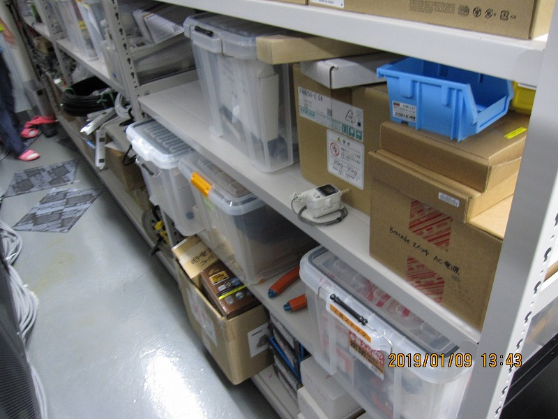

<h2>K1:PEM-TEMPERATURE_FIELD_DR<br>
  K1:PEM-HUMIDITY_FIELD_DR
</h2>

<ul>
  <li><b>Sensor :</b> Ondotori </li>
  <li><b>Observable :</b> Temperature [&#8451;], Humidity [&#37;] </li>
  <li><b>Typical vable :</b> 24&#8451; , 50&#37;  </li>
  <li><b>Frequendy range :</b> DC - 1 Hz</li>
  <li><b>Location :</b> Inside of the mine digital room</li>
</ul>

<h3>Sample plot : </h3>
 <br>

<h3>Picture : </h3>
 <br>
